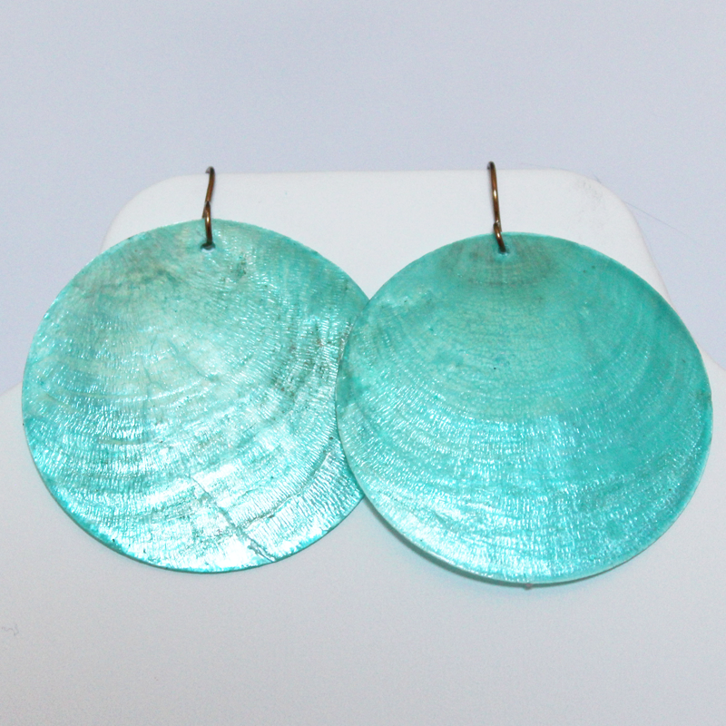
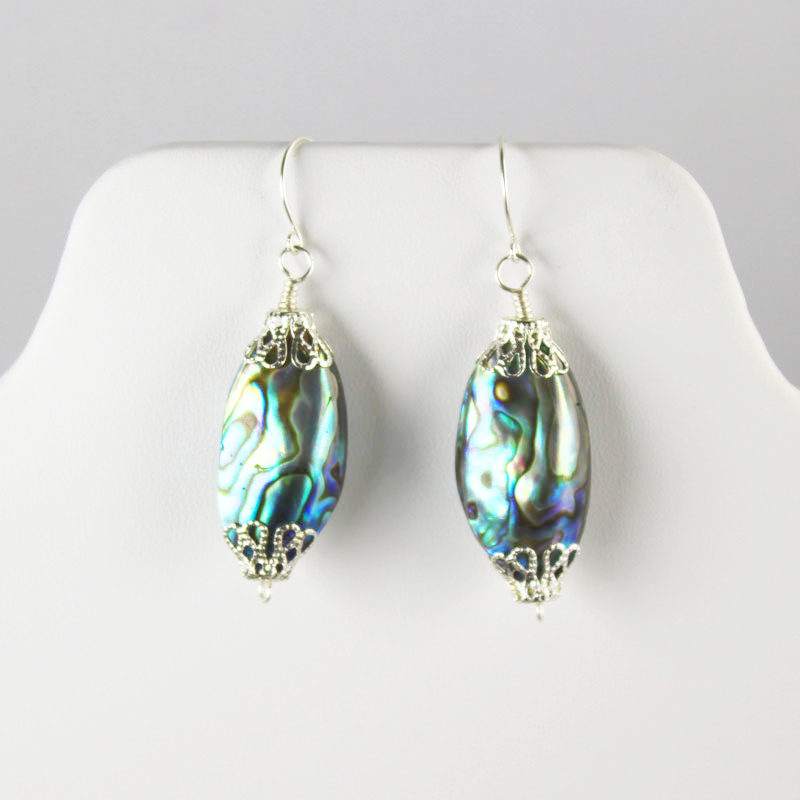
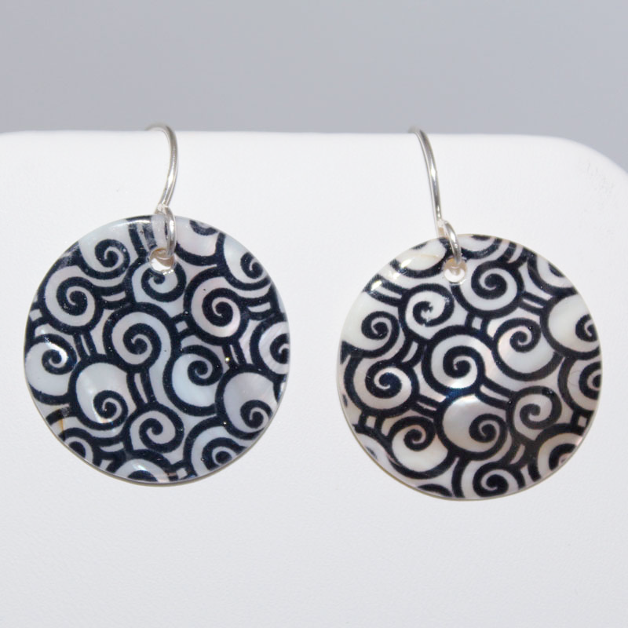
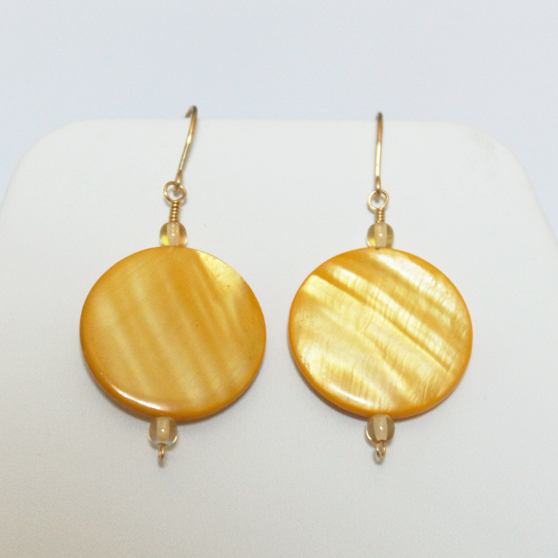
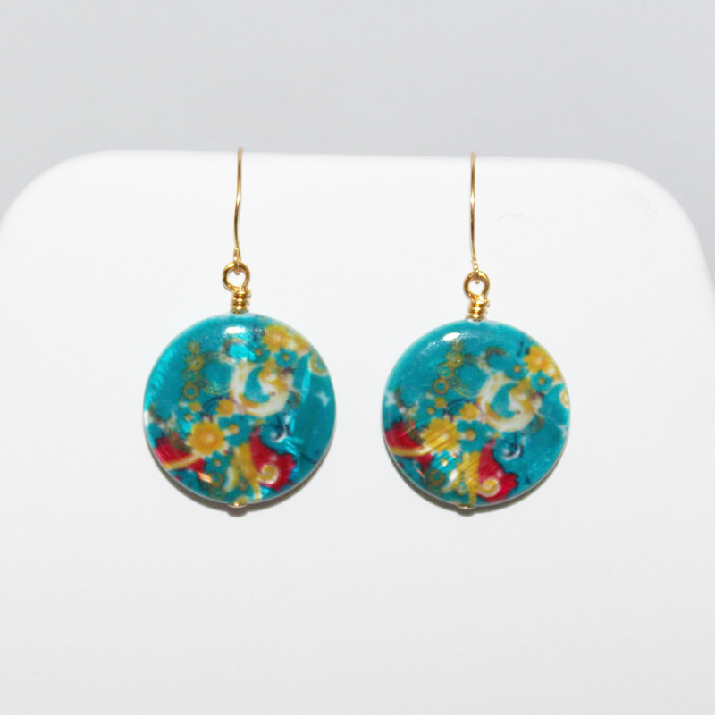

This is an 18-inch, Cleopatra-style necklace featuring Picture Jasper and gold cable chain. The design is a modern favorite inspired by ancient Egyptian jewelry-makers. Picture Jasper, also known as the Stone of Global Awareness, has been revered by many cultures over the centuries for its deep connection to the Earth and abilities to protect its wearer.
At 2 inches (height) by 1.5 inch (width), these beautiful brass earrings are sure to be noticed. They’re casual enough to wear to work and classy enough to dress up for a special occasion.
These grape cluster earrings are 1 x 1 inch, featuring brass artistic wire and red Czech glass crackle beads. They are very similar in style to grape cluster earrings to ancient Byzantine archeological artifacts as well as Victorian-era antiques.
Bright, fun and daring… These turquoise seashell earrings are a perfect way to splash a little color into your look. Even at 2.5 inches in diameter, they are thin, lightweight, and comfortable to wear.
This 30-inch strand necklace is a surefire eye-catcher, made with silver cable chain, silver filigree bead caps, and oval-cut mother-of-pearl seashells. This style of necklace was also popular in the west during the 1930s and 40s.
These surefire eye-catchers are made with silver filigree bead caps and oval-cut mother-of-pearl seashells. They are about 1 inch in length.
This set of six, heart-shaped, glass wine charms are perfect for dinner parties. They are made with colorful, handcrafted, Italian Millefiori glass beads.
These beautiful seashell earrings are just shy of 1 inch in diameter with silver ear wires. They are lightweight, eye-catching, and super comfortable.
These lovely and versatile earrings are made with silver artistic wire, white seashell beads and white frosted sea glass beads. They are 1-inch in diameter.
These seashell earrings are printed with a rich, red batik pattern that includes hints of leaves. They are a little over 1 inch in diameter with brass artistic wire and add a lovely splash of color to any outfit.
This 30-inch strand necklace is a beautiful edition to any wardrobe. It features brass artistic wire and red, faceted jasper. This style of necklace was also popular in the west during the 1930s and 40s.

A combination of rich green colors mix together in these malachite earrings. They are classy and lightweight with brass artistic wire. Many cultures and traditions honor green malachite as a stone of travel that absorbs negative energy and protects its wearer from harm.
These goldstone earrings with brass artistic wire catch the light beautifully. They are carved into a scarab shape, a tradition strongly rooted in ancient Egyptian culture. They are many meanings to this symbol, including the cycle of life, protection, and good luck. Goldstone is actually a manmade glass with flecks of copper suspended in it. It was originally created by French monks.
A combination of rich green colors mix together in this malachite necklace made with brass artistic wire. Many cultures and traditions honor green malachite as a stone of travel that absorbs negative energy and protects its wearer from harm.
These lovely and versatile earrings are made with brass artistic wire, yellow seashell beads and yellow glass beads. They are 1-inch in diameter.
Made with brass wire, red glass, and Carnelian, this 18-inch necklace is a beauty! Carnelian has been used in jewelry-making since the bronze age and some believe that it enhances courage, passion, and love.
These gorgeous earrings catch the light in the most beautiful ways! They are about 1 inch in diameter and ade from Tiger Eye, a stone that some believe provides the wearer protection, good luck and prosperity.
These printed seashell Earrings are about 3/4 inches in diameter, made with silver artistic wire.
These earrings are about half an inch in diameter with black and white striped rainbow calsilica and silver artistic wire.
These peace sign earrings are about 3/4 inches in diameter, made with dyed Howlite and brass artistic wire.
These seashell earrings are printed with a pink batik pattern. They are a little over 1 inch in diameter with brass artistic wire and add a lovely splash of color to any outfit.